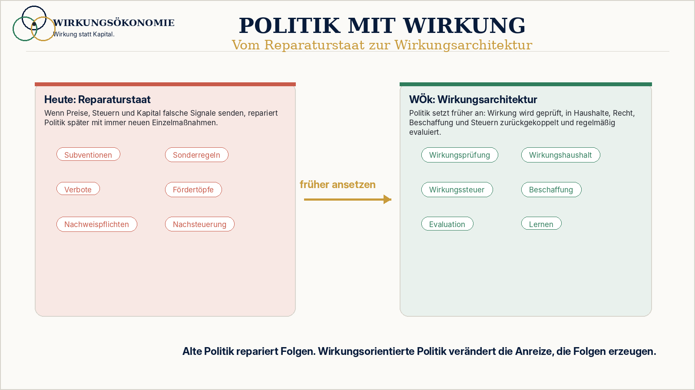

Was misst das alte System falsch?
Gesetze, Programme, Haushaltstitel, Zuständigkeiten und Sichtbarkeit.
 Wirkungsökonomie
Wirkungsökonomie
Für wen · Politik · Systemische Neuausrichtung
Nicht mehr Reparaturstaat, sondern lernende Steuerung.
Die Maßstabskrise der Politik entsteht, wenn Erfolg daran gemessen wird, was beschlossen, ausgegeben oder sichtbar kommuniziert wurde. Handlung allein ist aber keine Wirkung. Ein Gesetz kann Aktivität zeigen und trotzdem Schäden verschieben.
Maßstabskrise
Gesetze, Programme, Haushaltstitel, Zuständigkeiten und Sichtbarkeit.
Reparaturstaat, Ressortblindheit, Symbolpolitik, Bürokratie durch falsche Preise und verspätete Korrektur.
Nachhaltigkeitsziele, Förderprogramme und Berichtspflichten bleiben unterbestimmt, solange Preise, Steuern, Haushalte und Kapital weiter alte Fehlanreize senden.
Die WÖk macht Politik zur Rückkopplungsarchitektur: Wirkung wird vor Entscheidungen geprüft, nach Entscheidungen evaluiert und in Recht, Haushalt, Beschaffung, Steuern und Verwaltung zurückgeführt.

Fehlsteuerung
Die WÖk beginnt nicht bei Zielgruppenbedarf, sondern bei Fehlsteuerung: Was wird gemessen, belohnt, externalisiert oder zu spät korrigiert?
Wenn Schäden billig bleiben, muss Politik später mit Regeln, Ausnahmen und Subventionen gegensteuern.
Wohnen, Klima, Pflege, Bildung und Demokratie wirken zusammen, werden aber oft getrennt verwaltet.
Nicht nur Gesetzesfolgen, sondern Wirkungspfade, Zielkonflikte und Nebenwirkungen werden sichtbar.
Ein Wirkungsrahmen ersetzt keine Demokratie, aber er macht politische Wirkung überprüfbarer.
Alte Logik vs. WÖk-Logik
Alte Logik
Beschluss und Kompromiss gelten als Ergebnis.
WÖk-Logik
Zustandsveränderung, Folgekosten und Rückkopplung werden zum Prüfmaßstab.
Alte Logik
Ausgabenvolumen zeigt Priorität.
WÖk-Logik
Wirkungshaushalt fragt nach Prävention, Resilienz und Netto-Wirkung.
Alte Logik
Debatten kreisen um Schuld und Symbolik.
WÖk-Logik
Debatten können über Wirkung, Daten, Zielkonflikte und Korrektur geführt werden.
Wirkung statt Aktivität
Wirkung bleibt in der WÖk nicht Bericht, Appell oder Image. Sie wird in Preise, Kapital, Recht, Haushalte, Management, Öffentlichkeit oder Lernen zurückgeführt. Dadurch entsteht Wirkungslenkung statt bloßer Nachhaltigkeitskommunikation.
Nichttrivialität
Dieselbe Maßnahme kann je nach Kontext unterschiedliche Wirkung erster, zweiter und dritter Ordnung erzeugen. Deshalb braucht die WÖk Evaluation, Quellenklarheit und lernende Korrektur.
Wirkungsräume
Mensch, Planet und Demokratie bilden Bewertungsräume. In ihnen wird sichtbar, ob Zustände stabiler, verletzlicher, gerechter, riskanter oder regenerativer werden.
Wirkungskapital
Kapital entscheidet nicht allein, was wertvoll ist. Es wird danach gelesen, welche Wirkung es verstärkt und ob es positive Netto-Wirkung ermöglicht.
Konkretes Beispiel
Bezahlbares Wohnen, Sanierung und Klimaschutz werden heute häufig getrennt bearbeitet. Die WÖk fragt, welches Wohnmodell positive Netto-Wirkung auf Bezahlbarkeit, Energie, Gesundheit, Quartier und demokratische Stabilität erzeugt.
Was nicht passiert
Die WÖk verändert Wirkungspfade und Rückkopplungen. Sie bewertet keine Menschen als Personen und ersetzt keine demokratische oder unternehmerische Entscheidung.
Die WÖk verändert Wirkungspfade und Rückkopplungen. Sie bewertet keine Menschen als Personen und ersetzt keine demokratische oder unternehmerische Entscheidung.
Die WÖk verändert Wirkungspfade und Rückkopplungen. Sie bewertet keine Menschen als Personen und ersetzt keine demokratische oder unternehmerische Entscheidung.
Die WÖk verändert Wirkungspfade und Rückkopplungen. Sie bewertet keine Menschen als Personen und ersetzt keine demokratische oder unternehmerische Entscheidung.
Vertiefung
Die nächste Frage lautet nicht nach einzelnen Nachhaltigkeitsmaßnahmen. Sie lautet: Welche alte Logik erzeugt das Problem, und wie kann Wirkung rückgekoppelt werden?
Primärlogik / Stand